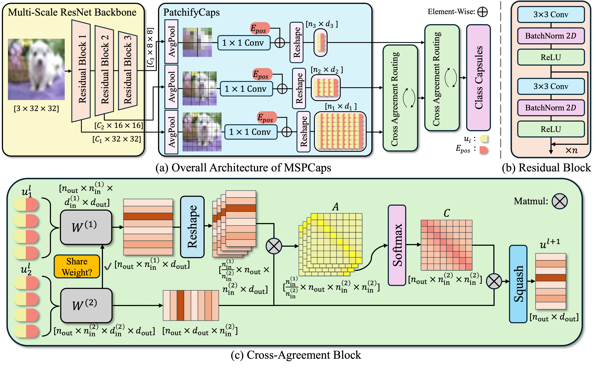
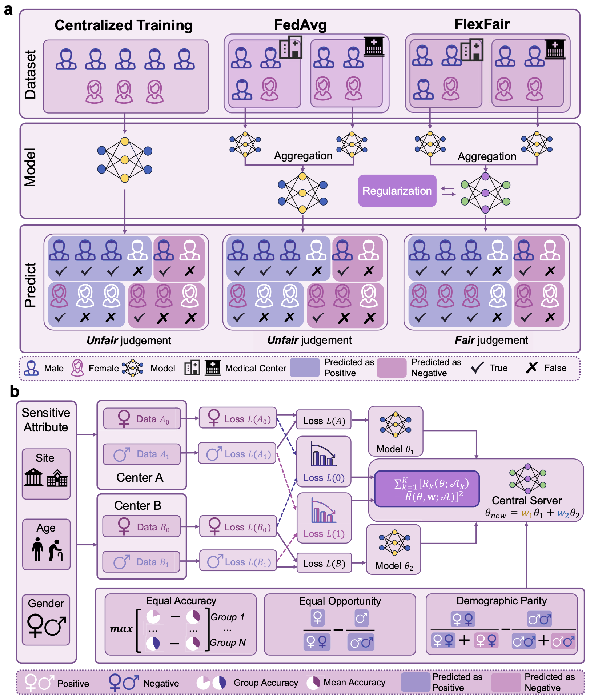

Research
My research interests lie in Computer Vision, Generative AI, and
Efficient LLMs. While my previous work focused on explainability in vision, my
current research centers on efficient LLMs.
|
|

|
MSPCaps: A Multi-Scale Patchify Capsule Network with Cross-Agreement
Routing for Visual Recognition
Yudong Hu,
Yueju Han,
Rui Sun,
Jinke Ren,
AAAI, 2026
project page
/
arXiv
Our goal is to build a simpler, more explainable model for visual recognition. By extracting
multi-scale features to initialize capsules, we enable effective part-to-whole voting mechanisms
while keeping the architecture lightweight.
|
|

|
Achieving flexible fairness metrics in federated medical imaging
Huijun Xing,
Rui Sun,
Jinke Ren,
Jun Wei,
Chun-Mei Feng,
Xuan Ding,
Zilu Guo,
Yu Wang,
Yudong Hu,
Wei Wei,
Xiaohua Ban,
Chuanlong Xie,
Yu Tan,
Xian Liu,
Shuguang Cui,
Xiaohui Duan,
Zhen Li,
Nature Communications,
project page
/
Journal
With FlexFair, we propose a robust solution for fair and private medical imaging, combining an
innovative federated learning architecture with a large-scale, real-world clinical dataset.
|
|
Academic Service: Program Committee, AAAI 2026
|
|
{kind=link}